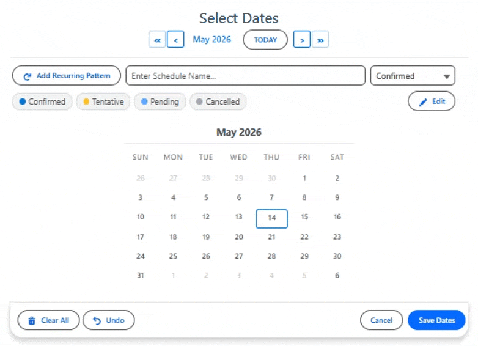
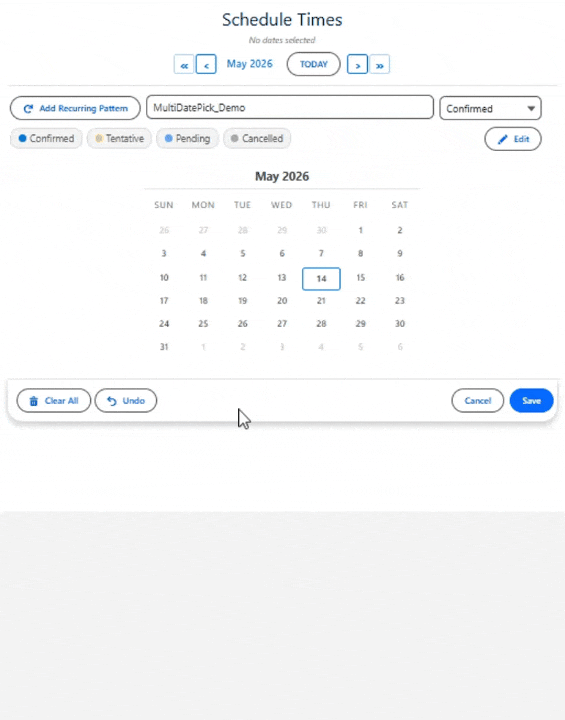

MultiDatePick
Select More. Do More.
The most customizable calendar component on the Salesforce AppExchange. Pick dates, schedule times, book resources with capacity tracking, color-code statuses, consolidate date ranges, and manage bookings — all from a single, configurable package with 60+ properties. No code required.

See it in action
Real screenshots from the product. Every feature here ships in the package.
-

Three Components, One Suite — Date, Date Time, and Booking working together on a single record page.
Three Components. One Package. Every Scheduling Workflow.
Pick one date or many. Assign times with precision. Book resources without conflicts. Track statuses with color-coded calendars. Consolidate adjacent dates into ranges. Edit and manage existing records inline. All click-configured and ready for Flows, Record Pages, App Pages, Home Pages, and Experience Sites.
Select More. Do More.

Date
Select Multiple Dates
Click individual dates, drag-select ranges, or add recurring patterns with custom intervals. Color-code dates by status. Consolidate adjacent dates into start/end date ranges. Edit and delete existing date records inline.
Explore Use Cases →
Date Time
Dates and Times, Together
Combine multi-date selection with a visual time slot grid or dropdown pickers. Track statuses with color-coded slots. Edit existing records to change dates, times, or status values inline. Group time slots by morning, afternoon, and evening.
Explore Use Cases →
Booking
Book Resources Across Dates
Reserve rooms, equipment, vehicles, or people with a visual time-slot grid. Capacity mode supports multiple bookings per slot with live availability badges. Edit, reassign, or delete bookings inline with conflict detection on save.
Explore Use Cases →The Most Customizable Calendar on the AppExchange
Other calendar components give you a date picker. MultiDatePick gives you a platform. With 60+ configurable properties, every aspect of the calendar, time grid, and booking experience is yours to control — without writing a single line of code.
Capacity Booking
Allow multiple bookings per time slot with live capacity badges. Perfect for training rooms, class enrollments, hot-desk pools, or any resource where more than one person can book the same slot.
Edit Mode
Select existing records on the calendar, then change their status, move them to a new date, update times, reassign to a different resource, or delete them — all inline without leaving the page.
Status Colors
Map any picklist value to a custom color. Calendar dates show pastel fills, time slots show colored stripes, and the whole interface becomes a visual dashboard of what's Confirmed, Pending, Cancelled, or any custom status.
Date Range Consolidation
Selecting Mon through Fri creates one record with a start date and end date — not five separate records. Configure an End Date Field and adjacent dates are automatically consolidated into ranges.
Setup Wizard
A guided step-by-step wizard walks admins through configuring any component. Choose a component type, map your objects and fields, set display options, and deploy — all without reading docs.
Recurring Patterns
Select every weekday, every other Monday, the 1st and 3rd Friday, or the last Saturday of each month. Custom week intervals and monthly occurrence filters turn a 50-click task into two clicks.
9 Languages Built In
English, Spanish, French, German, Italian, Japanese, Hindi, Brazilian Portuguese, and Chinese Simplified — all built in. The component matches the user's Salesforce language automatically. Every label, button, tooltip, and message is translated.
Every property works in Flows, Record Pages, App Pages, Home Pages, and Experience Sites. Configure once, use everywhere.
Explore the ComponentsHow Do You Want Your Data Stored?
Different scheduling problems call for different record shapes. MultiDatePick gives you three storage models so you can match the data to the workflow — without writing a line of Apex.
One Record per Date
Default behavior. Every selected date becomes its own record. Pick five dates → five records. Best when each day stands alone — RSVPs, attendance, sub-block sessions, daily check-ins.
Just configure relatedObjectApiName, dateFieldApiName, and relationshipFieldApiName.
One Record per Date Range
Date range consolidation. Adjacent dates collapse into a single record with a start date and an end date. Selecting Mon–Fri creates one row, not five. Perfect for PTO, travel, multi-night stays, projects, multi-day equipment rentals, and vehicle reservations.
Works on Date AND Booking. Add endDateField pointing to your End Date field. Non-adjacent picks still get their own records. On Booking, this collapses contiguous days per resource into one reservation record (instead of one record per day).
One Record per Time Block
Each block of time on each selected date becomes its own record. For example, picking the 1st and 2nd along with 9–10 AM and 1–2 PM Saves as four records, each carrying its own start and end time.
Default behavior on the Date Time and Booking components — no extra setup beyond startTimeField and endTimeField.
One Record + Sub-Blocks for the Gaps
Sometimes the gap between the work matters as much as the work itself. Turn on consolidateTimeSpan and the whole selection becomes one parent record covering the full envelope (first slot → last slot), while every break, pause, or interlude becomes a child sub-block record on a related object.
For example, pick 9–10 AM and 1–2 PM → one parent (9 AM–2 PM) plus a sub-block child for the 10 AM–1 PM gap.
Useful for: training sessions with coffee breaks (bill for the full session, audit the breaks), field service visits with travel between stops (track on-site time vs. drive time), or compliance-mandated rest periods inside a shift that need their own paper trail.
Date Time and Booking. Set consolidateTimeSpan plus the subBlock* field props (object, parent lookup, date, start, end).
One Record per Resource × Date Block
Each picked resource × each picked date × each contiguous time block becomes its own record. Multi-resource bookings multiply records across the resource axis AND the time axis. Selecting 2 rooms × 2 days × 2 blocks of time creates 8 records.
Useful for: multi-resource conferences (book the same time slot across two rooms), parallel team meetings, team field service routes (one record per technician per stop), or anything where each resource needs its own row.
Booking component only. Set allowMultipleResources=true and pick a Capacity Field if multiple bookings can share a slot.
Not Sure Which Shape You Need? The Wizard Asks 3 Questions.
You don't have to memorize the six shapes above. The Setup Wizard's Walk me through it path asks three yes/no questions and infers the right shape + component for you. New admins land on a working config in under two minutes.
-
1
Do you need times?
No → Date. Yes → DateTime or Booking.
-
2
Do you need a resource picker?
None → DateTime. Single dropdown or multi-resource checkboxes → Booking.
-
3
Should adjacent dates consolidate?
Each click = its own record, or contiguous days collapse into one record with a start & end date.
Each answer card has a mini diagram so you see exactly what your data will look like before you commit. The wizard then jumps straight to Step 2 with the right component pre-selected.
See the Wizard in the User GuideThe wizard's shape Q&A page — pick an answer card per question.
Works Everywhere in Salesforce
MultiDatePick isn't limited to one surface. Every component works on all major Salesforce page types — configure once and deploy wherever your users need it.
Screen Flows
Drag any component into a Flow Builder screen element. Selected dates output to Flow variables as a text collection or JSON — ready for loops, decisions, and record creation.
Lightning Record Pages
Place on any record page in App Builder. The component auto-detects the current record and saves selected dates as related child records. Enable Edit Mode to manage existing records inline.
App Pages
Build standalone scheduling pages using Lightning App Pages. Use the staticRecordId property to link to a specific parent record — no record context needed.
Home Pages
Add booking or scheduling components to your Home Page so users see their calendar the moment they log in. Pair with staticRecordId for a centralized booking dashboard.
Experience Sites (Communities)
Expose scheduling to external users on Experience Cloud sites. Customers, partners, or vendors can book resources and select dates through your community portal. Use staticRecordId to link to a parent record since community pages have no automatic record context.
What Can You Build with MultiDatePick?
From simple date selection to complex multi-resource booking, here are real-world use cases across all three components. Each component page has 10-15 detailed use cases with configuration tips.
Date — Date Selection
PTO & Vacation Requests
Employees select their time-off dates on a calendar. Adjacent dates are automatically consolidated into date ranges — selecting Mon through Fri creates one record with a start and end date. Status colors show Pending, Approved, and Denied at a glance.
Travel Date Selection
Employees select their travel dates in a Screen Flow, then auto-generate per-diem records, travel detail line items, or expense entries for each selected day. Use endDateField to consolidate multi-day trips into single records.
On-Call Rotation
Managers assign on-call dates using recurring patterns with week intervals — set every other Monday for the next quarter in two clicks. Status colors distinguish Primary, Backup, and Swapped shifts.
Event Attendance
Attendees RSVP to event dates on a calendar. Each date creates one RSVP record linked to the attendee. Status colors show Registered, Waitlisted, and Cancelled responses. Preloaded dates prevent duplicate registrations.
Date Time — Date + Time Scheduling
Interview Scheduling
Recruiters schedule interviews by selecting dates and choosing 30-minute time slots from a per-date grid. Each date gets its own grid, allowing different interview times on different days. Status colors track Scheduled, Completed, No Show, and Cancelled.
Maintenance Scheduling
Schedule recurring maintenance visits with specific time windows. Use the time slot grid to assign 1-hour service windows per day. Conflict detection prevents overlapping appointments on the same equipment.
Appointment Booking
Clients pick appointment dates and times from a visual grid or dropdown pickers. The component checks for conflicts with existing appointments and auto-generates records with date, start time, and end time fields populated.
Shift Scheduling
Managers assign employee shifts across multiple days. Pick dates, set start/end times per shift, and auto-generate shift records. Group time slots by period (Morning, Afternoon, Evening) for quick selection.
Booking — Resource Booking
Conference Room Booking
Reserve conference rooms across multiple dates and time slots. The booking grid shows live room availability. Business hours are pulled from each room record so different rooms can have different available hours.
Training Enrollment
Employees enroll in training sessions by selecting a course, choosing dates, and picking time slots. Capacity tracking shows how many seats remain per session. Status colors distinguish Enrolled, Waitlisted, and Cancelled registrations.
Desk Hoteling
Employees reserve hot desks by selecting a desk resource and choosing dates with time blocks. Capacity badges show desk availability at a glance. Two-month view helps employees plan hybrid schedules weeks in advance.
Vehicle & Fleet Reservation
Reserve company vehicles for specific dates and time ranges. The booking grid shows which vehicles are available. Multiple-resource mode lets users compare availability across the entire fleet at once.
Each component page has 10-15 detailed use cases with configuration tips.

Import Pre-Built Configurations in 3 Steps
Download a JSON configuration template from this website and import it into your org using the Setup Wizard. No CLI, no code, no metadata deployment — just paste and go.
1 Download a Configuration
Browse the use cases on each component page and click the Download JSON Config button. The file contains all the property settings for that use case — object mappings, display options, status colors, and more.
2 Open the Setup Wizard
In your Salesforce org, open the MultiDatePick Setup component (add it to any Lightning page via App Builder). Navigate to the Existing Configurations tab, then click the Import / Export section.
3 Paste & Import
Give your config a name, paste the JSON into the text area, and click Import. The wizard deploys the configuration as a Custom Metadata record. Then just set configName on any component to load those settings instantly.
Specifications
At-a-glance technical details for admins evaluating MultiDatePick.
| Supported Salesforce editions | Enterprise, Unlimited, Performance, and Developer |
|---|---|
| Components | 3 — Date, Date Time, Booking |
| Supported targets | Screen Flow, Lightning Record Page, Lightning App Page, Lightning Home Page, Experience Site |
| Languages | 9 — English, Spanish, French, German, Italian, Japanese, Hindi, Brazilian Portuguese, Chinese Simplified |
| Time-slot intervals | Configurable — any minute interval (15 / 30 / 60 typical) |
| Configurable properties | 60+ per component (exposed via the Setup Wizard, App Builder, and Flow Builder) |
| Setup options | No-code Setup Wizard, Lightning App Builder, or Flow Builder |
| Salesforce API version | 63.0 |
Frequently Asked Questions
- Lightning Record Pages — drop on any record and selected dates auto-save as related child records (no Flow needed).
- Screen Flows — appears in the Flow Builder palette and outputs selected dates / JSON to Flow variables for loops, decisions, or record creation.
- App Pages and Home Pages — for standalone scheduling dashboards or company-wide booking pages.
- Experience Sites (Communities) — on a Record Detail page
recordIdis auto-injected so it behaves like a Lightning Record Page; on generic community pages, embed it inside a Screen Flow or setstaticRecordIdto tie it to a specific parent.
configName property to load shared settings from a Custom Metadata record so every instance stays in sync.
Screen Flow — best for guided multi-step workflows, dynamic logic (decisions, loops, assignments), or when the calendar will live on an App Page, Home Page, or Experience Site. Flows give you full control: create records on any object, send emails, update fields, or route to different screens based on what was selected. The Config Library has a Copy Flow XML button that generates a ready-to-import starter Flow for each use case.
Setup Wizard — a third option that skips the property panel entirely. Walk through the wizard once, save as a Custom Metadata config, then drop the component anywhere and set
configName to load all settings. Great for admins who want a guided experience or for sharing configs across orgs.
configName. The wizard also supports cloning, exporting, and importing configurations as JSON — making it easy to share configs between orgs or download pre-built templates.
capacityField property pointing to a number field on your resource object (e.g. Max_Seats__c = 10). The time grid shows live badges like "3/10" and slots stay available until capacity is reached. If you've also configured statusField, status stripes appear in each slot showing the mix of your picklist values across all bookings — whatever you've defined (Approved/Pending, Reserved/Held/Released, etc.). Set showAvailabilityCount to ON to display the badges.
statusField to the API name of any picklist on your record (e.g. Approval_Status__c, Stage__c, or whatever you use). Then set statusColors with a comma-separated mapping using your picklist values — for example Approved:green,Submitted:orange,Rejected:red or Open:blue,In Progress:amber,Closed:gray. Color names and hex codes both work. Use hideBookingsWithStatus to completely hide records with a specific status from the grid and capacity counts.
enableEditMode property and an Edit Bookings button appears on the calendar. Click it to open the bulk edit panel: pick dates to load their records, then change status, move to a new date, update times, reassign a resource, or delete — all in one Apply Changes click. The capacity-aware conflict check blocks moves that won't fit in the new time range, and deletion uses a two-click confirm to prevent accidents.
endDateField property, the component automatically groups adjacent selected dates into single records with a start date and end date. For example, if a user selects Monday through Friday, instead of creating five separate records, the component creates one record with Date__c = Monday and End_Date__c = Friday. Non-adjacent dates still get their own records. This works on all three components.
minDate, maxDate, block specific dates from a source object (like holidays), restrict to future-only dates with allowPastDates, limit the maximum number of selections with maxSelections, or provide an explicit list of availableDates where everything else is disabled. Use autoJumpToFirstAvailable to open the calendar to the month of the first available date.
String[] array of ISO dates (e.g., ["2026-03-10", "2026-03-11"]) and optionally a JSON string with consecutive dates grouped into ranges. The Date Time component adds start/end times to each entry. The Booking component outputs a success count and any conflict dates. All components can also auto-save records directly to your configured object.
bookingConflictDates. In capacity mode, slots remain available until the configured capacity limit is reached. Use conflictBehavior to control whether conflicts block the save, skip the conflicting dates, or allow overlap.
hoverFields property to specify which fields appear in the tooltip when users hover over a booked slot or calendar date. Pass a comma-separated list of field API names (e.g., Name,Status__c,Start_Time__c) and the component displays them in the hover card.